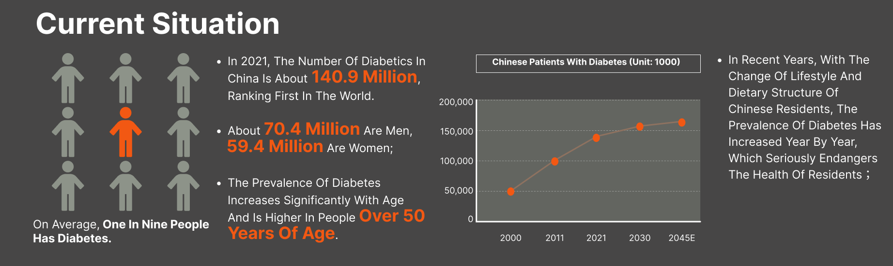
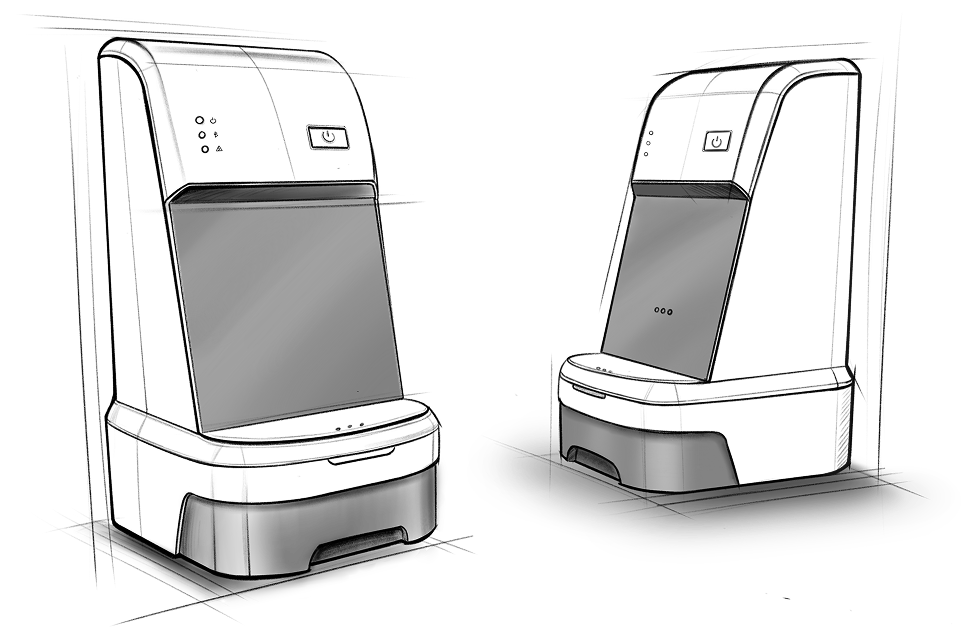
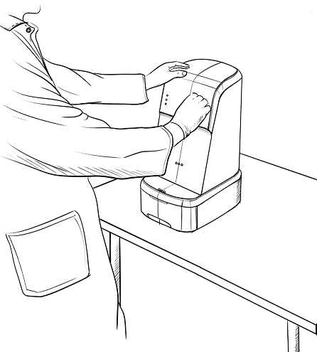
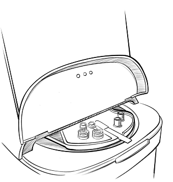
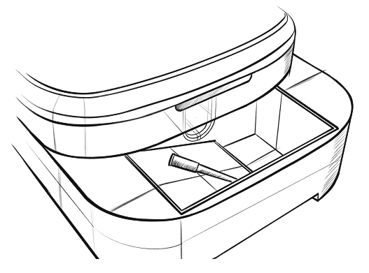
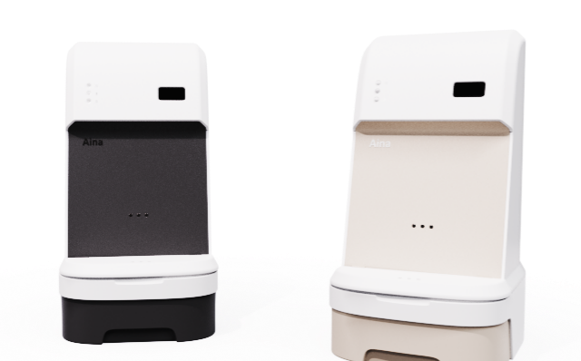
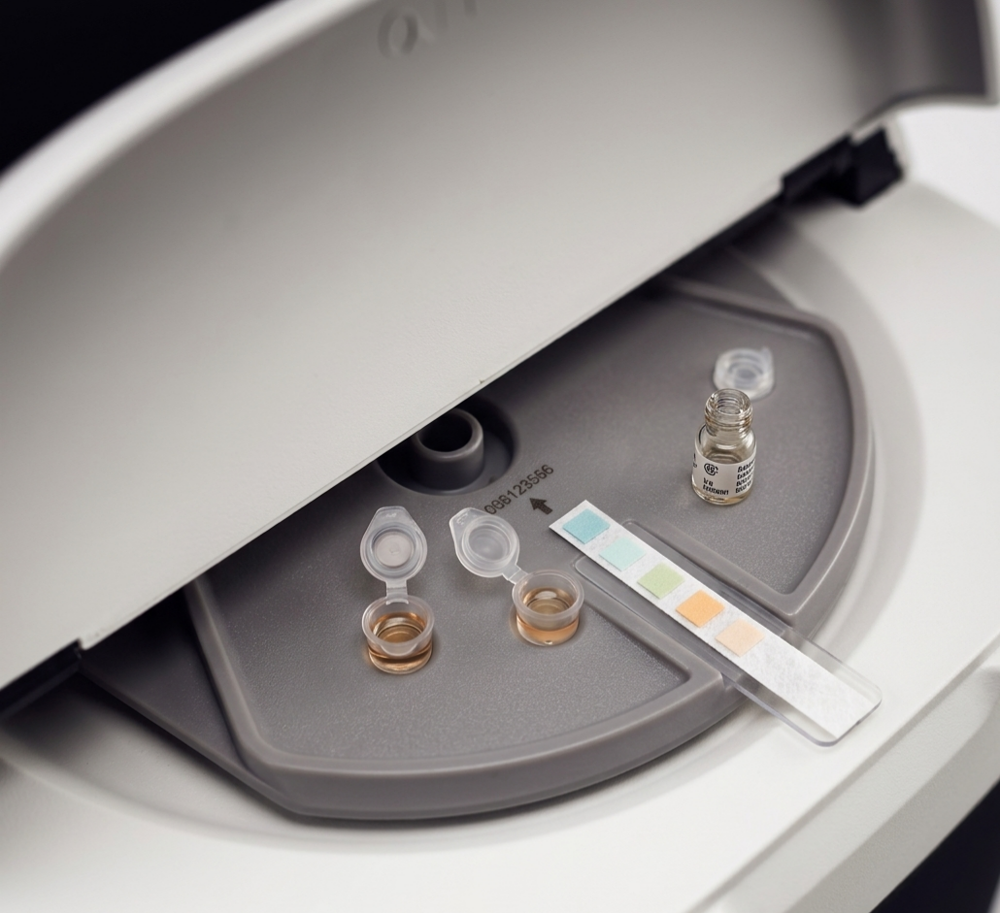
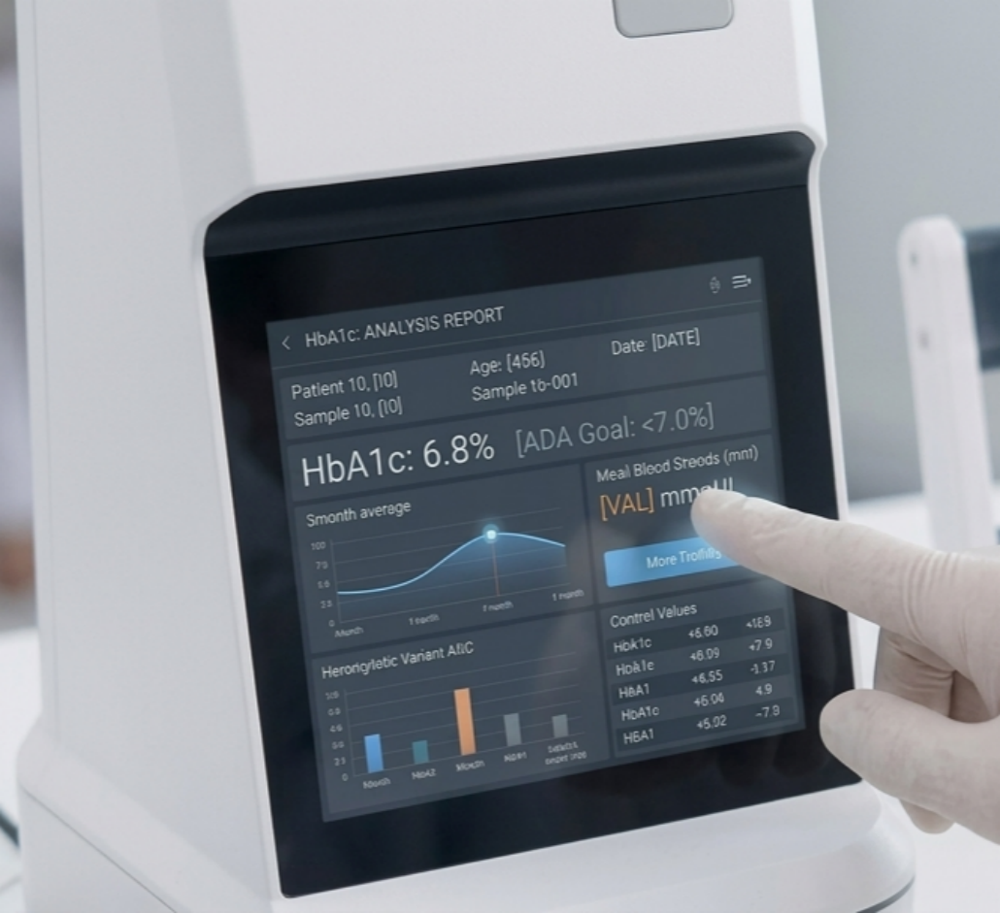
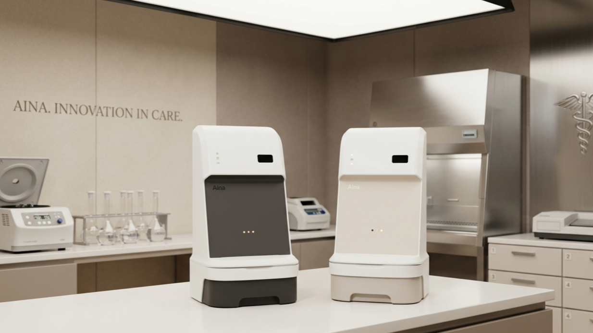

HBA1C detector device
introduction

Unlike the momentary nature of patients’ routine blood glucose monitoring, this product focuses on providing medical institutions with high‑precision long‑term HbA1c trend analysis, filling the critical gap between home self‑testing and in‑depth clinical diagnosis. We are committed to combining laboratory‑grade testing accuracy with highly efficient medical collaboration workflows, so that it is not merely a data collection terminal, but a professional tool that empowers physicians to make authoritative interventions and precise clinical decisions.
what i try to do
In my vision, I aim to develop a fully automated intelligent testing solution. The product will automatically complete sample processing and HbA1c measurement, and instantly synchronize results with cloud-based management software. Powered by an intelligent data tracking and analysis module, the system can automatically generate visual long-term trend reports, helping to free physicians from repetitive manual documentation and significantly enhancing the efficiency of clinical follow-up and the continuity of care.
sketch
The product consists of three main components: a core detection unit, a display panel, and a medical waste collection layer. The overall system is compact and easy to use. Users only need to place the sample and test strip onto the testing platform and perform a few simple program settings to enable fully automated detection.




prototype

Used RHINO to construct the product's exterior design and preliminary internal structure. The product features a minimalist overall aesthetic with fluid lines, primarily employing high-quality, semi-matte polycarbonate material. The central display screen visualizes the detection process and results, thereby enhancing the readability of medical data.

spatial application


